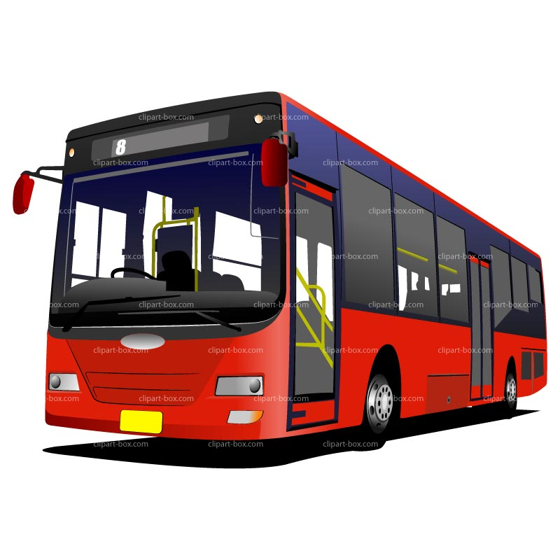

汽車可以行駛台74線在到達時(松竹松竹交流道)下來。
汽車可以行駛台74線在到達時(松竹松竹交流道)下來。
臺中市東山路為主要對外聯絡道路，並貫穿整區連結北屯與新社，可以從臺中市北屯路、文心路或松竹路接往東山路到達此區。

臺中市公車:
通往中臺科技大學、廍子、太原車站、東光路、屯區藝文中心、國軍臺中總醫院方向：1、15、20、51、68、85
通往三貴城、貴城山莊、民德橋、橫坑巷、連坑巷、中興嶺、新社市區、東勢方向：21、66、270、271、276、277
通往軍功路、慈濟醫院、潭子車站方向：20、66
通往文心路、東海別墅、北屯路、一中商圈、道禾六藝文化館方向：1、15、21、68、85、270、271、276、277
通往臺鐵/捷運松竹站、舊社公園、北屯區公所、崇德路：922
停靠臺中車站：1、15、20、21、270、271、276、277

自行車：太原自行車道轉大坑溪自行車道進入此區。PS:也可以在台中市內租借YouBike微笑單車。